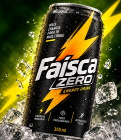
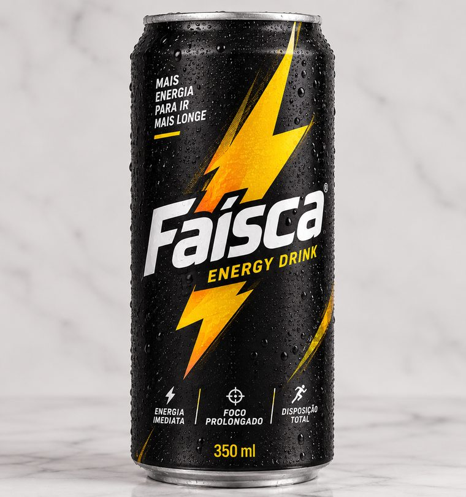

Nasce no interior de Goiás
A Faísca começa a ser fabricada e vendida em lata, com preço acessível — pensada pra quem queria energia de verdade sem pagar caro por isso.
Faísca apresenta
Zero açúcar. A mesma vontade.

"Deu vontade. Deu Faísca."
ConheçaNossa origem
Há doze anos a Faísca nasceu no interior de Goiás pra dar conta da energia de quem trampa, estuda e ainda quer noite. De lá pra cá, virou a lata mais pedida em bares, festas e lojas de conveniência de três estados do Centro-Oeste — e agora está pronta pra sair de casa.
A Faísca começa a ser fabricada e vendida em lata, com preço acessível — pensada pra quem queria energia de verdade sem pagar caro por isso.
Faísca vira a lata mais lembrada em bares, festas e lojas de conveniência de três estados do Centro-Oeste — rentável, mas ainda uma marca regional.
Chegou a hora de virar marca nacional, sem abrir mão da rentabilidade que a Faísca construiu até aqui. O primeiro passo dessa jornada tem nome: Zero.
Todo o sabor e toda a energia Faísca, sem nenhuma gota de açúcar.
Disposição imediata e fôlego prolongado pra sua noite não parar antes de você.
No bar, na conveniência, na mão: Faísca Zero gelada sempre por perto.
Porção de referência: lata de 350 ml. Valores oficiais a confirmar antes do lançamento.
| Nutrientes | Quantidade por 350 ml | % VD* |
|---|---|---|
| Valor energético | [a definir] kcal | [a definir] |
| Carboidratos totais | [a definir] g | [a definir] |
| — Açúcares totais | [a definir] g | [a definir] |
| Proteínas | [a definir] g | [a definir] |
| Gorduras totais | [a definir] g | [a definir] |
| Sódio | [a definir] mg | [a definir] |
| Cafeína | [a definir] mg | — |
*% Valores Diários de referência a definir conforme legislação vigente.

O clássico energético Faísca, do jeito que você já conhece.
A mesma identidade, o mesmo tapa de energia — agora zero açúcar.
Gelada nos bares e nas lojas de conveniência.
Perto de você, na hora que der vontade.
Chegando nas lojas BR Mania
Deu vontade, deu Faísca
Dois cortes verticais, feitos pra tela do seu celular — do jeito que a campanha vai rodar nos stories e no feed.
Para a banca
A seguir, a leitura de mercado e a lógica de negócio que sustentam a aposta na linha Zero como motor da expansão nacional da Faísca.
E o Zero é o segmento que mais cresce no mercado de energéticos.
Depois de um reajuste de +9% no preço, o volume caiu apenas 2% no bar — contra 15% no supermercado. É onde a marca tem força de verdade.
| Canal | Participação na receita | Receita (R$ mi) | Margem bruta | Lucro bruto (R$ mi) | % do lucro bruto total |
|---|---|---|---|---|---|
| Total | — | — | — | — | 100% |
Receita total estimada: R$ 180 milhões. Valores de receita e lucro bruto calculados automaticamente a partir da participação e da margem de cada canal.
— do lucro bruto da Faísca vem dos bares e das conveniências.
A fábrica opera hoje a 72% da capacidade. A proposta de marca própria para o atacarejo ocuparia mais 25 pontos percentuais — levando a fábrica a 97%. Proponho um teto de ~15 pontos percentuais (~87%), reservando espaço de sobra para a Faísca e o Zero crescerem.
Com o teto proposto, a fábrica chega a — de uso — contra — se a marca própria do atacarejo ocupasse tudo o que pediu.